한 게임, 두 화풍 — 마을 GUI와 인게임 스테이지 배경을
AI 파이프라인으로 양산한 과정 5단계
기존 에셋 라이브러리를 분석해 크로노스피어 한 게임 안에 정반대 화풍 두 용도가 섞여 있음을 확인. (‘스텔라 킹덤’은 별개 게임이 아니라 게임 속 마을 명칭) → 용도별 스타일 가이드 2종을 작성해 팔레트·핵심 규칙·구도·해상도·체크리스트·AI 프롬프트 템플릿까지 규격으로 고정했다.
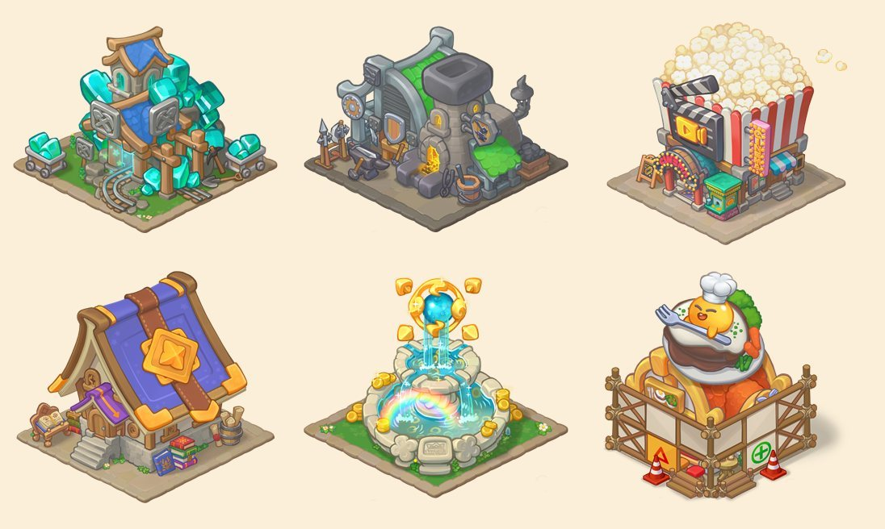
마을을 꾸미고 배치하는 쿼터뷰 건물·소품. 시티빌더형 동화풍 스프라이트.
#3A2A1E · 균일 두께 (검정 ✕)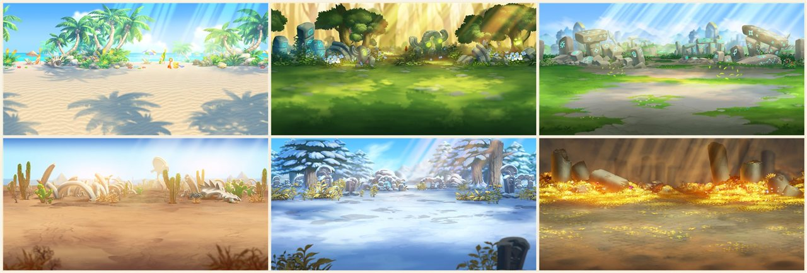
전투가 벌어지는 2:1 가로 무대. 라인 없는 회화풍 디지털 페인팅.
가이드의 방향만으론 매번 결과가 흔들렸다. 공식 에셋과 실측 비교 → 교정을 반복해, 외곽선 두께부터 명도·채도·플레이필드 밴드까지 측정 가능한 규칙으로 못 박았다.
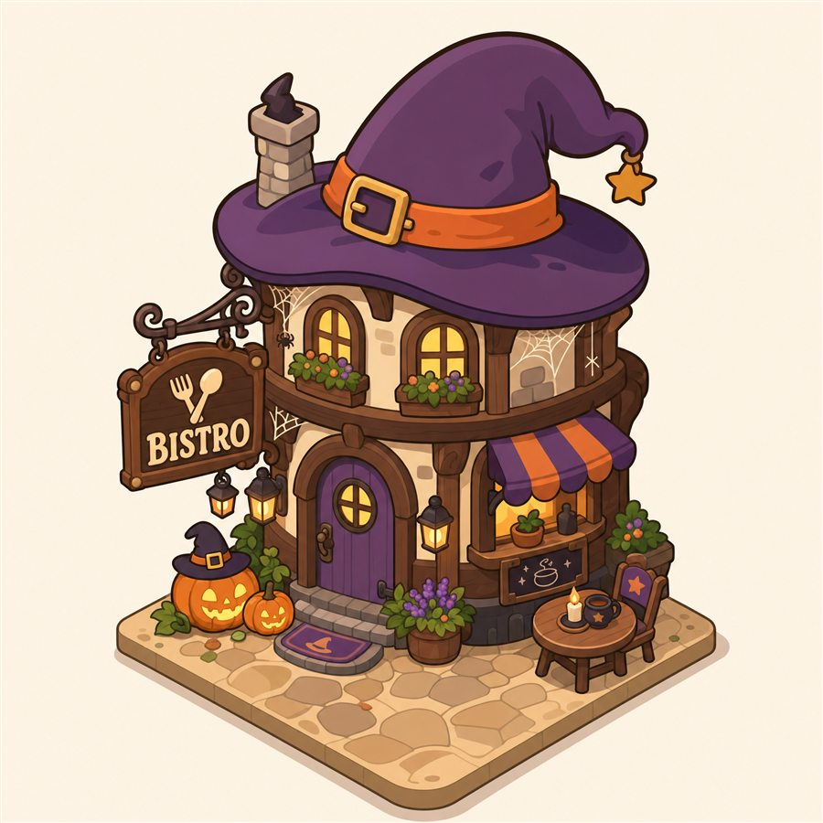
어둡고 진해 동화풍 톤을 벗어남.
명도 88–131 · 채도 48–67% · SD 54–56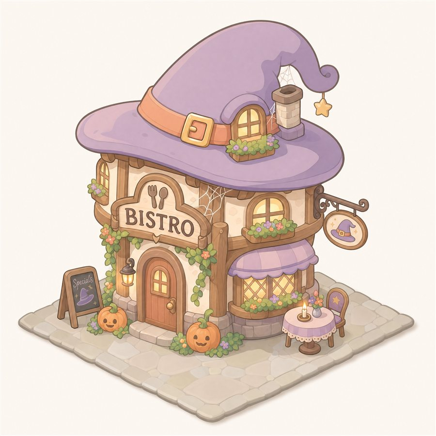
너무 밝혀 저채도·라인이 사라짐.
채도 26–38% · near-black 0% · 외곽선 ✕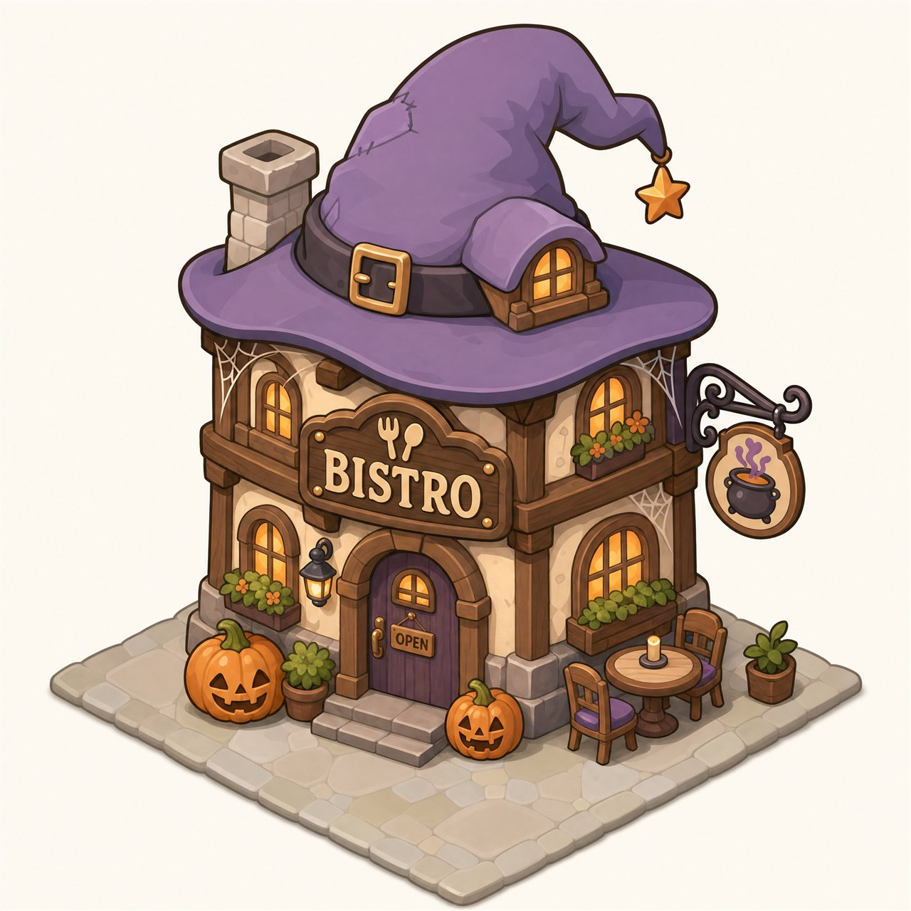
또렷한 외곽선 + AO 볼륨 + 중간 콘트라스트.
목표 명도 140–160 · 채도 40–45% · SD ~45claude.ai 커넥터로 이 창에서 직접 호출. 모델 gpt_image_2 — 간판 텍스트·고품질에 강점
gen.mjs 노드 스크립트로 Nano Banana·gpt-image-1 자동 생성
API 없이 ChatGPT·Gemini 웹 + Photopea 크롭 — 비개발 팀원용
중립 스타일시트 몽타주를 첨부해 세트 화풍 통일 — 모티프 번짐 없이 화풍만 전달
개발자부터 비개발 팀원까지 커버하도록 생성 경로를 표준화. 일관성은 i2i 스타일 앵커로 잠갔다.
할로윈 식당 3종으로 규약을 검증. 공식 에셋과 실측 비교 + 3회 반복으로 색·볼륨을 맞췄다.
remove_background로 투명 컷아웃 → 배치용 PNG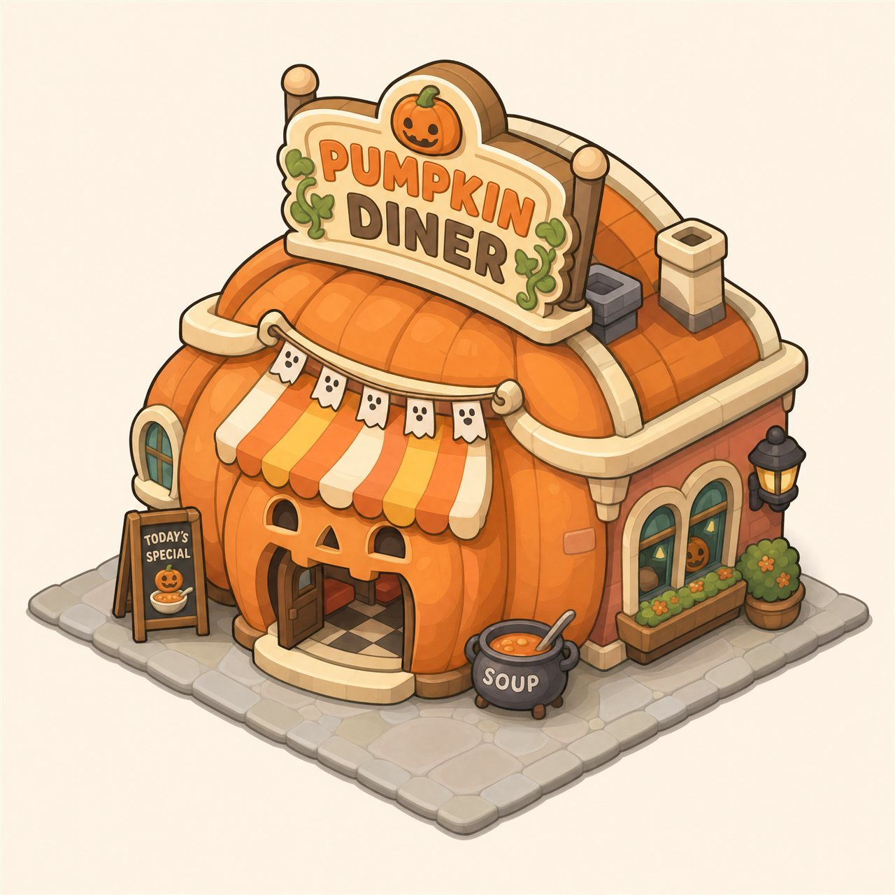
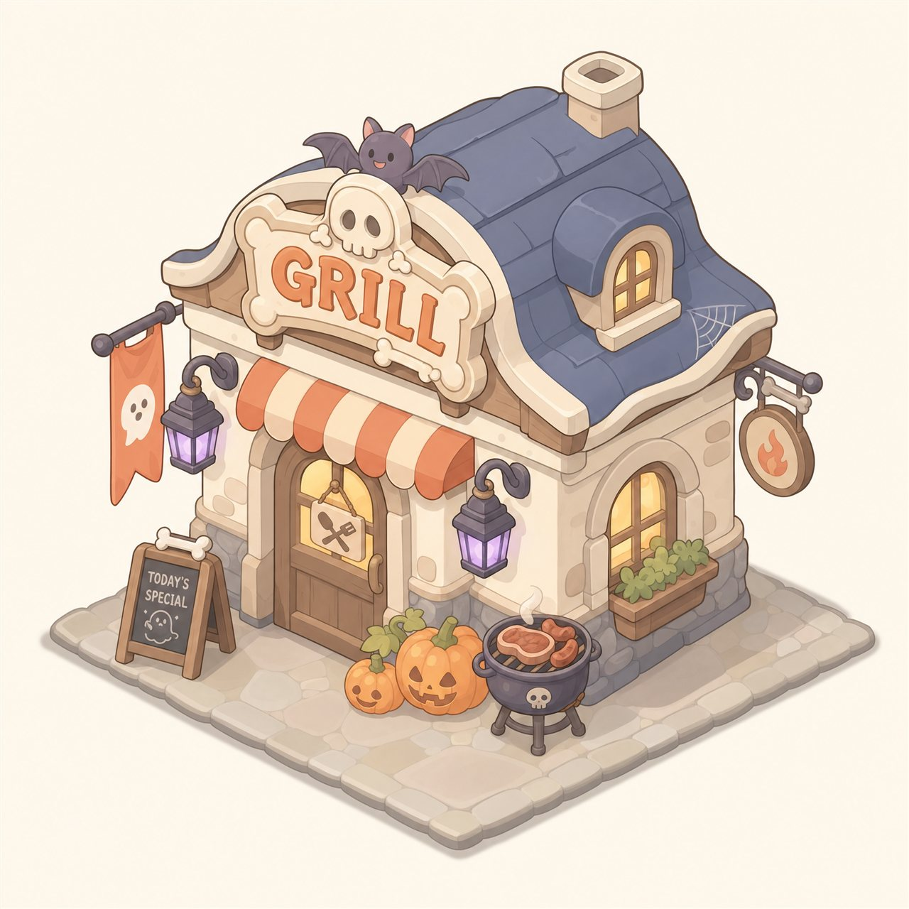
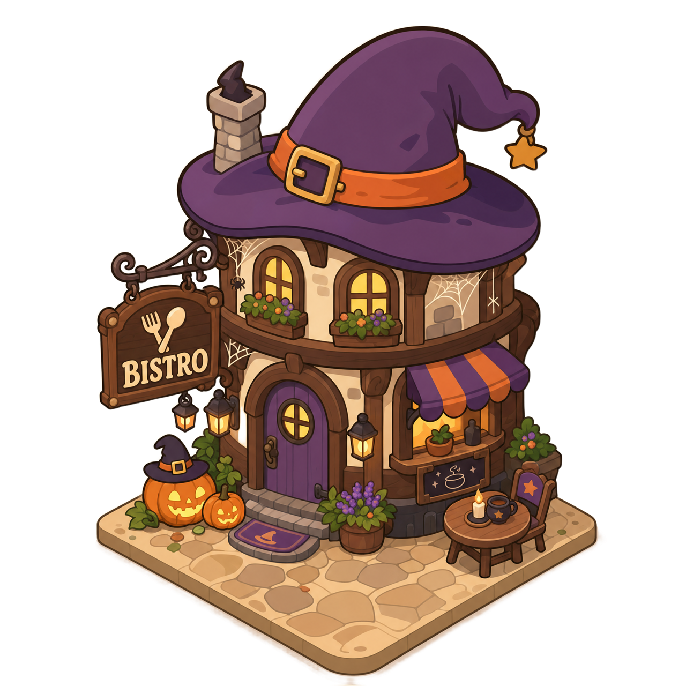
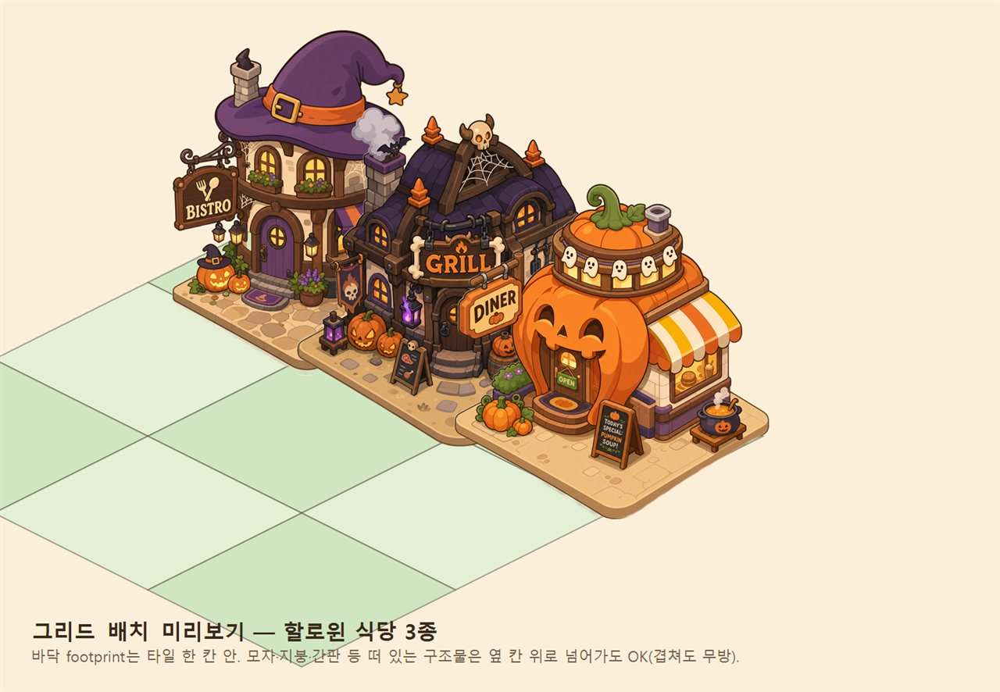
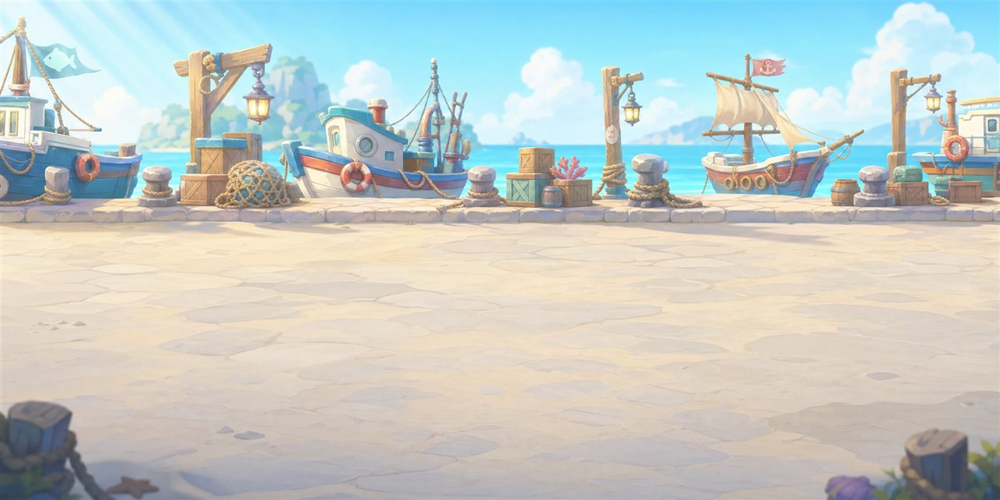
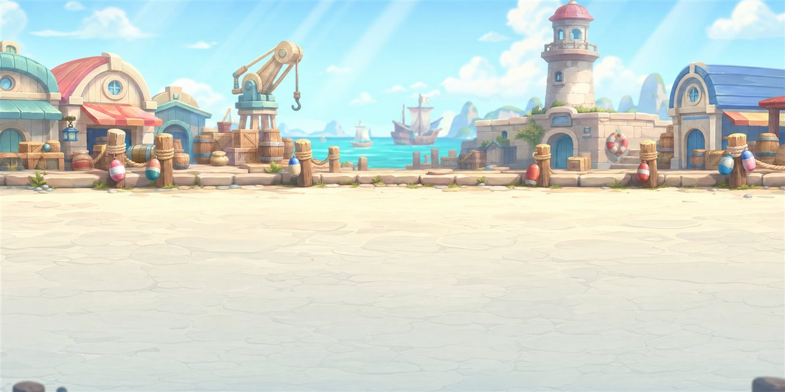
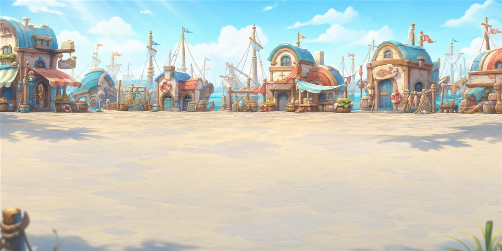
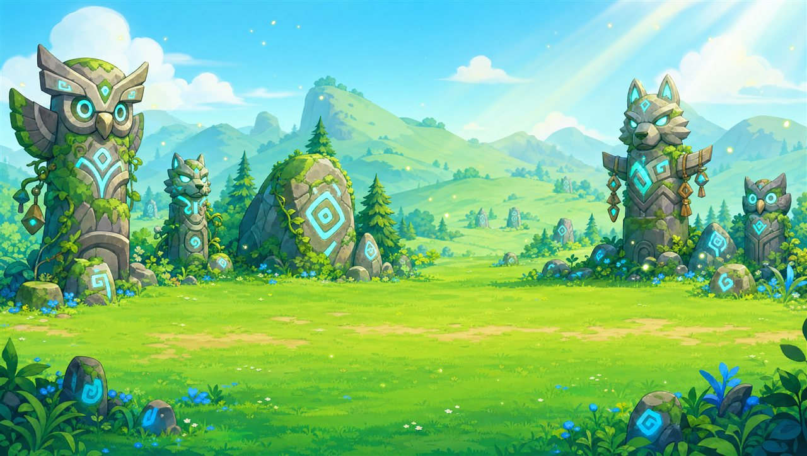
배경이 아니라 전투 무대. 반실사로 흐르지 않게 카툰 화풍으로 고정하고, 게임 규칙을 구도에 새겼다.
make-tileable로 좌우 이음매 제거생성 과정을 용도별 repo로 분리하고, 공개 온보딩 페이지로 누구나 따라 하도록 배포.
한 게임 · 두 용도, 가이드 2종
실측·반복으로 수치 규약 확정
4경로 + i2i 앵커 표준화
셀셰이딩 · 타일 · 투명 컷아웃
페인터리 · 플레이필드 · 루프
repo 분리 + 공개 온보딩